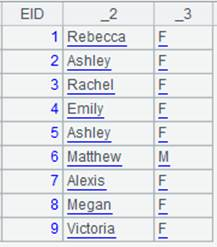
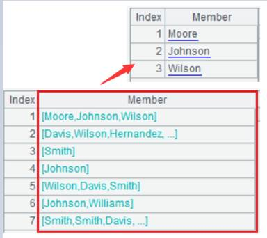

Description:
Fetch one or more records from a cursor/distributed cursor.
Syntax:
cs.fetch(n;x)
Note:
Only one of the parameters n and x is valid. The function fetches n records when n is valid, or fetches records continuously till the value of expression x (Here x doesn’t return a boolean value) changes or becomes true (Here x returns a boolean value) when x is valid, and then returns them as a sequence/record sequence/table sequence or returns null if the cursor has already been fetched out. It is often used to retrieve a large amount of data in batches. When both n and x are omitted, the function returns all records in a cursor and closes cursor.
Parameters:
|
cs |
A cursor/distributed cursor |
|
n |
An integer |
|
x |
Grouping expression, according to which cs is sorted. With x, n will be ignored |
Options:
|
@0 |
Won’t actually fetched out the selected data from the cursor. The option enables an action functionally equivalent to copying the data; it doesn’t support parameter x. |
|
@x |
Close the cursor after data is fetched. |
|
@o |
Return a table sequence |
Return value:
A sequence/record sequence/table sequence
Example:
|
|
A |
|
|
1 |
=demo.cursor("select * from EMPLOYEE order by SALARY desc") |
Return a cursor of retrieved data sorted by SALARY. |
|
2 |
=A1.fetch@0(3) |
Select top 3 highest-paid employees. |
|
3 |
=A1.derive(interval@y(BIRTHDAY,HIREDATE):EntryAge, age(HIREDATE):WorkAge) |
With @0 option used in A2, A3 fetches data from a complete cursor |
|
4 |
=A1.fetch() |
|
|
5 |
=demo.cursor("select * from EMPLOYEE order by SALARY desc") |
|
|
6 |
=A1.fetch(;SALARY) |
 Stop data retrieval when SALARY change to select a group of highest- and equally-paid employees.. |
|
7 |
=A1.fetch() |
Return the remaining records in the cursor. |
|
8 |
=demo.cursor("select * from EMPLOYEE order by SALARY desc") |
|
|
9 |
=A8.fetch@x(3) |
Close the cursor after data is fetched. |
|
10 |
=demo.cursor("select * from EMPLOYEE order by SALARY desc") |
|
|
11 |
=A10.fetch(3;SALARY==13000) |
Stop data retrieval when the value of the expression is true  |

|
|
A |
|
|
1 |
[192.168.0.110:8281,192.168.18.143:8281] |
A sequence of nodes |
|
2 |
=file("emp.ctx", A1) |
Node 192.168.0.110 holds a part where EID is from 1 to 250 and node 192.168.18.143 holds another part where EID is from 251 to 500 |
|
3 |
=A2.open() |
Open a distributed composite table |
|
4 |
=A3.cursor() |
Return a distributed cursor |
|
5 |
=A4.fetch() |
Fetch records form the distributed cursor |
Related functions: